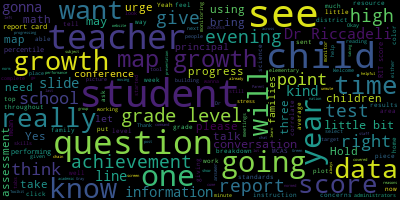

[Galusi]: Good evening. I think we're just giving it one more minute.
[SPEAKER_01]: Good evening.
[SPEAKER_02]: All right, so it's 6.03 right now. And I think we're just about ready to start with this. So good evening, everybody. Thank you so much for joining us tonight. We know that this time of the year is really busy, and there are lots of competing things to do. And we really appreciate you putting in the time. going through this information with us. What we've tried to do in this presentation is to be brief, but at the same time, be informative. So at the end of the presentation, there certainly will be time for questions and answers. So my name is Bernadette Riccadeli. I'm Director of Professional Learning and Student Assessment. And with me,
[Galusi]: Suzanne Galussi, Assistant Superintendent for Academics and Instruction. Welcome. Thank you so much for joining us. And we're really excited to provide some further information on our district NWEA map growth assessment tool.
[SPEAKER_02]: So NWEA map. A lot of people probably, many in the district, many of us just, you know, we use the term NWEA MAP. And, you know, we just want to let you know what that means. NWEA stands for the Northwest Evaluation Association. So it was the group back 40 plus years ago that developed this assessment. So there were several districts up in the Pacific Northwest that saw the need for an assessment. for students that was norm-based, meaning it was measured across large groups of students. And they developed this and over 40 years, it's kind of changed and morphed its way into this very popular test called MAP, the MAP growth. And MAP stands for measures of academic progress. So it's a widely used test that we're gonna go through tonight. So on tonight's agenda, We're going to go through what MAP growth is, which I've just given you a very brief overview of. How do schools and teachers use MAP growth scores? So how are they useful to us? And what do we do with that data? We're going to take a look at the timeline as far as when students in each of the three different grade levels are tested. Generally, it's three times a year, but there is some variation between the elementary, the middle, and the high school level. We're going to go over the importance of having a growth mindset when looking at these tests. And in general, in our instruction, in our teaching and learning in the Metro Public Schools, we're going to go over a sample family report. That's the report that you're going to receive in the next week or so, or maybe a little bit, maybe in the next 10 days when you meet with your child's teacher, if you're on the elementary level. And then lastly, how do these tests lead us into you to support your child? So that's the framework for tonight's presentation. So the MAP-Grove test, so that measure of academic progress test, is a computer adapted test that's created by the NWEA, the Northwest Evaluation Association. And most students take it three times per year. And the results of this test provide teachers with information that help them deliver appropriate content for each student and determine each student's academic growth over time. So we really look at it as a way to really hone in and where the student's strengths are, where the student could be stronger, and really target in once we take a look at that data. So we look at it really as a a way to go in, to be surgical, to be very specific, to target those areas that are in need of some remediation. Going on to the next slide. So a little bit more of what is MAP growth continued. So what does MAP measure? So it measures growth of what students know, regardless of their grade level. It also measures their growth over time because they're taking it three times a year. They're taking it year over year. It allows us to track a student's progress throughout their school year and across multiple years. We're able to go in and we're able to look to see what student A has done in the third grade the fourth grade the fifth grade. Have they has their trajectory been in a positive upward direction or do we see dips. And if we do, what is the reason for that? In that second column, what does it mean to be computer adaptive? So many of us have taken computer adaptive tests. Some of us don't know we've taken computer adaptive tests. But what that means is that a student answers a question. And based on the answer that the student provides, if that answer is correct, the next question is more difficult. If the answer is incorrect, it adjusts down to a question that's of lesser difficulty. So that's what's meant by an adaptive test. It's not obvious to the student. The student has no idea this is happening. So it's nice. It's discreet. Again, it's based on a growth mindset. We want the student to feel really positive about what they're doing. So again, they just keep going. It's also meant to meet them just above where they are at. So that comes, that zone of proximal development where it's, yes, hard enough, but not too difficult to make them frustrated. And that's key. That's that sweet spot in instruction that teachers are always so interested in honing in on. And then in your third column, what is a RIT score? So RIT is the way that the scores are measured. So, after each MAP growth test, results are delivered in the form of a RIT score that reflects the student's academic knowledge, their skills, and their ability. So, these scores are like, they're equal interval scores. So, they're like marking height on a growth chart where you have inches that are equal intervals. So, the RIT scores are equal interval scores. They are norm referenced. So we can get the output and look to see where does this student fall in terms of a percentile. That last bullet there, you can tell how tall your child is at various points in time and how much they have grown between one stage and another. So this is what we can see when we look at a student scores over time. And RIT stands for the Roche the Roche unit. So the R is the Roche and the IT comes from the IT unit, so the Roche unit score. So I referenced that this test is taken for the most part three times a year. So in the fall, in the winter, and then in the spring. There are some variations. So for example, in science, It's not taken three times a year across all grade levels. On the elementary level, it is taken twice a year. We have those, you'll see dates, which are date spans. So what we tell teachers to do is we want these tests administered during those time spans. We understand that not everyone can give it on, for example, January 9th, 2023. So we give them that week to do it. And it's important that those tests take place within that specific timeframe so that the measurement, we're measuring equally across the district with regard to the time that it's taken. Okay. The next slide. So I mentioned the importance of having a growth mindset. So a lot of times when people look at tests, they let that test be, define their ability, define where they are, what they can do. That's often referred to as a fixed mindset. This test and the output of this test is meant to serve in a growth mindset. In other words, we're looking at this test as a means for students to grow. It's not the be all end all itself, but rather it's a way that we can propel the student forward specifically in looking at their their strengths and their their weaknesses. So it's a very positive way of looking at student learning and student growth. And not only is this the philosophy behind MAP growth but is the philosophy behind teaching and learning in the Medford Public Schools. We all believe that students can move forward that they can grow. So wherever they are. the belief is that they can move forward. These tests help us get there. All right, so there are various parent resources that are available for the MAP growth tests. There are sample tests, and I want to take a look at a couple of the sample tests. They're really easy to access. So if you can click on that link right there, it's going to bring us to the practice test page. So this presentation is going to be available for people to see. And you'll be able to access it on your own if you want to take a sample test. You can see on this page, they give us the username and the password of GROW. So it's GROW and GROW. So if you can just click on that practice.map, yes, that link right there, that is great. If you put grow and grow in, you make it nice and simple for us, and then click there, it brings us to a page in which we can select a grade level. So let's try grade three, math, and then, yep, math K-12. And then it gives us the option of a language. We're going to go with English. And the test is the practice items math, the second one down. And then we just click on the arrow. It's going to give us a sample, a sample problem. So this is a sample problem that a grade three student would see. So the question is Manuel paid 34 cents for gum. He gave the clerk a dollar. which picture shows the correct change. So obviously the answer needs to represent 66 cents. So here we would click on the letter, the circle, click on the circle that corresponds to the 66 cents, which is
[Galusi]: Before I do that, Dr. Riccadeli, before I do that, I also wanna draw people's attention to the toolbar that students have access to so that up here, I'm gonna hover over it so you can see that this is a highlighter. So if students feel that they wanna isolate some keywords or help them break down what the question's asking them, there's also an eraser part for the highlight. This is a line reader. So especially for math and science, If students click this, it will read the question to them because this is really assessing the math skills, not reading skills here. It gives them a notepad so that if they want to do any calculations or need any place to take notes or do work, they could click on this and it would bring it up for them. And then there is a little cue here that if they'd like an answer eliminator, it would get rid of one of the choices for them to help them answer the question. So now you would like me to select, which one am I selecting?
[SPEAKER_02]: All right, so we're going to do the 60B. I think it should be option B with 66 cents. So again, here it's not telling the student whether it's right or not. So that little arrow down at the bottom will bring them to the next question. So they click that and they bring them to the next question. So interestingly, it's an adaptive test, as I said, but in this sample, it does not appear to be adaptive because in looking at this question when I did it earlier, I clicked a different answer and it brought me to the same second question, which is interesting. So in the way that it works when the student takes it, again, if they answer it correctly, the next question is more difficult. If they answer it incorrectly, the next question is easier. So I just wanted to just give you a sample of what a question, and in this case, we picked grade three. We're not going to go through every grade. You're welcome to do that. So if you're the parent of a seventh grader and you want to go on and see what a seventh grade reading question looks like, you certainly can do that. And you can play with it. And obviously, the students can too. So I just wanted to give you just a very brief view of one of the practice tests that is available to parents and to students.
[Galusi]: So I'm not the greatest at this, and I'm trying to figure out why. Hold on one minute, please. Why I don't have this in present mode. Does everyone still see my tabs at the top? Yes. Okay, hold on, please. I'm gonna try this again. I want everybody to really be able to see. All right, well, in the interest of time, I guess I'll keep going. I apologize that you have to look at my messy tabs. Is this the next slide, Dr. Riccadeli? Yes. It is, yes. All right, so I'm going to take over from here a little bit to talk about the tests and the scores. As Dr. Riccadeli started this evening talking to you, the MAP growth family reports are sent home at the marking periods. So you have seen the assessment timeline. These are given three times a year. And at the elementary level, it pretty much corresponds with the report cards. There are quarters at the secondary level, but once the students take this, it's sent home. In school, teachers are using map growth to inform their teaching and personalize learning for students. I have to stress, I've said this several times, but I have to stress it at this call, that this is one data point that teachers are using to target and monitor their instruction with your children. They're using other forms of assessment, both informal and formal, but map growth is just one of those pieces that are used to give the complete picture for your student. And principals and administrators, curriculum directors, myself, Dr. Cadelli, we're using some of these scores to work with either building leadership, principals working with teachers, in department meetings, at grade level meetings, to talk about trends and data, to talk about student supports that are needed, that are currently in place, progress monitoring, map growth is a progress monitoring tool, so that because doing these assessments three times a year, we're able to look at how students are progressing in each of those subject areas throughout the year. So it gives that progress data for principals and district administrators to have conversations with staff about the data, how students are doing and how we can target instruction moving forward. So can map growth tell me if my student is working at grade level? Yes, it can. Again, it's one data point, but we're going to show you this evening how the reports will give you that data. And then I just urge the chain of command with any questions or concerns you have. So I would start always with your child's teacher or teachers, and then If you feel you need some more information, I would urge you to go to the building principal. And then there's always, you know, Dr. Riccadeli and myself, but I would just urge first that chain of command, because a lot of your questions and concerns can be answered directly by the teacher. So I've kind of covered some of this. How will I receive my child's MAP growth scores? I'll let you know about that. We were strategic in picking this date because we know that this week it's conferences for high school, and we know that the week of December 12th, which is a little less than two weeks away, begins the report card conferences for elementary school. So we will post this recording on the district's website so that other families that were unable to come this evening can learn a little bit more information if they would like to and also have access to the embedded links. How do I use my students' MAP test results to improve my child's academic performance? I think that's a great question that you can bring up at your child's conference or any conversation that you have with your child's teacher. We're gonna talk a little bit about the breakdown of how the scores are given to give you a rough estimate, but I would not either, you know, I really wouldn't sound the alarm depending on what the results are for your child's Scores, again, this is one data point. You'd get a more complete picture from your child's teacher or teachers. So moving on, this is a sample of the family report. What we have here on the left is the color-coded scale that coincides with the reports that come home. So that you can kind of see the blue areas are children that are performing above the grade level norm. Green is students that are performing at the higher level of the grade level norm. You can see the breakdown of numbers. So that green area means 61 to 80%. That's high. Average, which is like the sweet spot, that's students that are performing in the 41st to 60th percentile of the normed group. and then so on by the color coding. Gray means no score. That can happen for a couple reasons. A student may have been absent for medical reasons. A student may have transferred in. If there's a gray score and you have a question about it, doesn't correlate for your family and child situation, just let the teacher know and we can troubleshoot that one. At the top of the report, it's going to give you some of the data that Dr. Riccadeli and I have covered this evening. Basically like, what is this report? What does the RIT score mean? Why is my child taking this? That's the purpose of this evening's presentation, but it's also helpful to just have that as a reference point. You're going to see for every subject test that your child takes, math reading for all students, but science starting in grade three, all the way up through high school. You're going to see on the left by this plot graph here, that's tracking your student's achievement on the test in comparison to other students across the nation in their grade that are taking this test. On the right, you're going to see your child's growth percentile. Again, in that same group of grade level peers across the nation. You're also going to get a little narrative for each as well as the percentile so that you can see up top here, for example, for math. it was average achievement. So we're here in the yellow and you can see that this child scored in the 47th percentile. You can see over time, if you have younger students that are still, you know, they've only taken this this year or maybe last year, you're not gonna have as much growth. because as the children go up in the years, you're going to have more data to refer to in terms of their achievement and growth over time. This you can see started, this one just goes from like the fall. in one year. And so you can see their RIT score. These scores on the plot line are their RIT scores that Dr. Riccadeli spoke about. And so these are just telling you right here is the band of RIT scores for this grade level that the students should be performing in. somewhere between 170 and 220. And so it's giving you where your child has performed throughout the year. The solid line will be your child. The dotted line will be the normed national results. Below here, they're going to tell you what overall that means. The other piece is that map growth can correlate to what their proposed MCAS performance would be. So many, you know, we click that piece off. So for your children, if it's an MCAS grade, it will tell them as of right now, for this time of year, your child would perform proficient or needs improvement or progressing towards. And it'll give a little bit of an indicator as to where they are in relation to MCAS standards. For here, for the high growth, it's not a line plot. You just see the breakdown by color of their growth. Now you can see for this student, average achievement, but really super high growth, so I want these are the conversations, we really want you to have with teachers, because oftentimes you may have. Students that have really high achievement but low growth, because their achievement is already at a point where. there may be above grade level standards. So their growth is not as big. And also you could have the opposite where the achievement is below grade level standards, but their growth is really high. And that's okay too, because they're making steady progress. If you have concerns, please, I know we can't say it enough, but have those conversations with your child's teacher. I'll just move to the next slide, just so you can see what the science, it's the same setup. And then at the bottom, there are some questions if you want that can kind of guide you in that discussion with your child's teacher or teachers. So we've spoken about this already this evening, but resources for families, one which we've discussed is the map reports that you're gonna get at the beginning of the year during the report card conferences. Throughout the year, they'll be sent with the report card, and you'll have that information, and then you'll be able to not only be informed, but know what kind of follow-up questions or conversations you may want to have with your child's teacher or teachers. Again, we urge you to reach out to school staff if you have questions. And then there is this MAP Parent Toolkit. So when we post this presentation on the Medford Public Schools website, this is another resource for families that's also a hyperlink. It will bring you not only to the practice tests, but it will also bring you to information that can be translated so families can select the language they need and learn a little bit more about. The map test platform. And. Again, we've hyperlinked in this parent toolkit here as well, so that we're giving it to you on three slides, so you have that resource readily available, and I believe that this is Yeah, this is the last slide. So I think I'm going to leave it on this slide so that at this point, if you have any questions that Dr. Riccidelli and I did not cover, if you could please put it in. I think what I'll do is I'll I'll stop the screen share, but I can put it back up at any time if the questions correlate to something that we want to visually show you. But this way, we could kind of see faces. And if you want, you could just put it in the chat. That way, when I'm not screen sharing, we can both monitor the chat or feel free to unmute yourself and ask any questions. Sarah, did you want to ask a question?
[SPEAKER_02]: I can't hear you. Let's see. Can you unmute?
[Galusi]: Hold on. I'm pressing ask to unmute. Let's see if that works. Hold on, let's see if I can change that.
[SPEAKER_01]: Oh, I think you persistently asked me to unmute. Is that what it was? I got a little message that said, host is asking you to unmute. Yes, yes. OK. I don't have a question. I just wanted to say hi and to thank you for that information.
[Galusi]: Oh, thank you. You're welcome.
[SPEAKER_01]: Thank you so much for joining us.
[Galusi]: It's nice to see you.
[SPEAKER_02]: So maybe there aren't any questions. That might be a good thing. We did such a thorough job, Dr. Riccidelli. Yeah, yeah. So you know what? I know when the parent reports come out, you may, at that point, you may have questions. And again, you know what to do, which is to reach out to the teacher. Or you might want to take a look at Ms. Galuzzi's very nice explanation of that family report again. Or maybe you don't. whatever, it's here if you want to. But we're thrilled that you were able to join us tonight.
[SPEAKER_01]: If no one does have a question, I had a minor one that wasn't going to be worth taking up the time for, but since there haven't been others. You mentioned that there was some correlation offered about how their MAP score relates to their potential MCAS performance, but I didn't understand where we would find that. Yes, so let me put that back up. Is it just that it wasn't, it didn't appear on the particular example? Yeah, we're not using, go ahead.
[SPEAKER_02]: No, I was just gonna say the example that we're projecting here is one that Matt put out that's universal to all 50 states. But on your child's test, as Mrs. Galuzzi said, it's gonna be clicked off. So there will be a statement about that connection to MCAS and what the probability is of their score based on these scores. So you're right, you don't see it on this, but it will appear on the family report that you receive. It's just in the example that, sorry, go ahead.
[Galusi]: No, no, no. Can you see my arrow or my cursor? Yeah. Yeah, I can. So I can see that paragraph. That's where it will appear. It would be right below there.
[SPEAKER_01]: Yes. For every subject. Perfect. Yep. Just a point of curiosity on my part. Yes. Yes, absolutely. All right. Well, you're doing that. I assume that there will be lots of people who kind of are interested in and watch it, the recording of it after the fact, you can certainly edit out the part that I'm in. Hopefully that recording will not include this little.
[Galusi]: No, I think it's helpful though. I think a lot of people would have that question.
[SPEAKER_01]: Okay. Yeah. Yeah. Great. We appreciate it. Elia was here listening from the other room. She said, was that Mrs. Galussi? So she recognized me. Tell her I said hello. I will. I will. Okay, good. All right. Thanks. All right.
[SPEAKER_02]: Thank you so much. Bye-bye. Bye. All right, and for those people who are joining from home because we're still recorded, thank you so much for joining us and have a great evening or afternoon or morning. Take care.
|
total time: 15.07 minutes total words: 2142  |
|||
{kind=link}